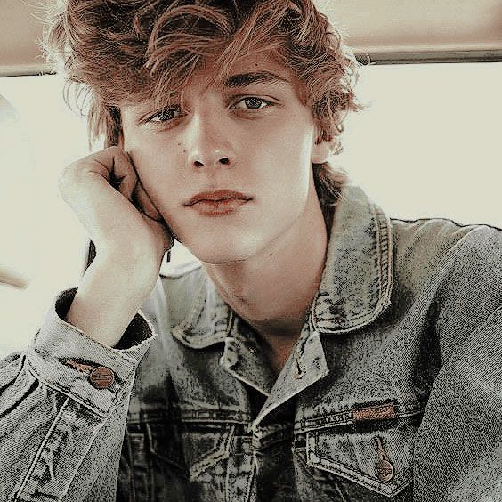

Lorcan Lawrence ScamanderAbout:1.Lorcan Lawrence Scamander was born to Rolf Goldstien Scamander and Luna Pandora Lovegood in March 22 2007. 2. He has a 3 minute elder twin brother called Lysander Alexander Scamander. 3. He was sorted into Ravenclaw house when he first went to Hogwarts School of Witchcraft and Wizardry in 2019, at the age of 12. He was extemely sick for 3 years, so he and his brother went to school 1 year late. 4. His godparents, as well as his uncle and aunt are Neville Frank Longbottom and Hannah Amelia Longbottom. 5. He is a Pure blood wizard. 6. He wasn't appointed as Prefect, Head Boy or Quidditch Captain. Characteristics: 1. Dreamy 2. Lost 3. Careless Possesions: 1. Nargle toys 2. Nargle nets 3. A 13", Hazel Wood, Dragon Heartstring Core Wand 4. Nimbus 2020 (broomstick) Other Details: Eye Colour - Blue Hair Colour - Brownish Dirty Blonde Height - 153cm (1st year) Height - 190cm (7th year) Species - Human Gender - Male Patronus - Ginger Cat Boggart - Lysander Quidditch Position - Beater for Ravenclaw Favourite Colour - Transparent Nickname - Lorc Speciality - Divination Later Life: Married To - Lucy Audery Weasley Kids - Rolf Sirius Lorcan Scamander (March 8, 2036), Leran Lysandra Kate Scamander (February 24, 2038), Luciana Bella Roxanne Scamander (August 31, 2040) Professions - Divination Professor at Hogwarts School of Witchcraft and Wizardry, C.E.O of Nargle Hunt |
 |